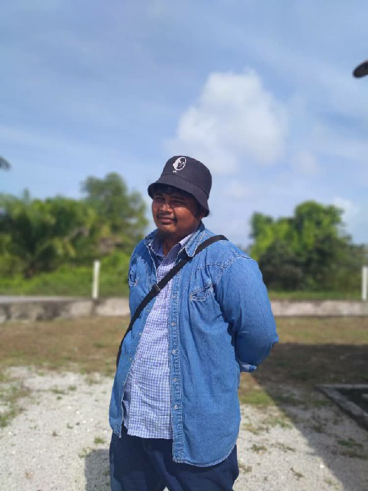
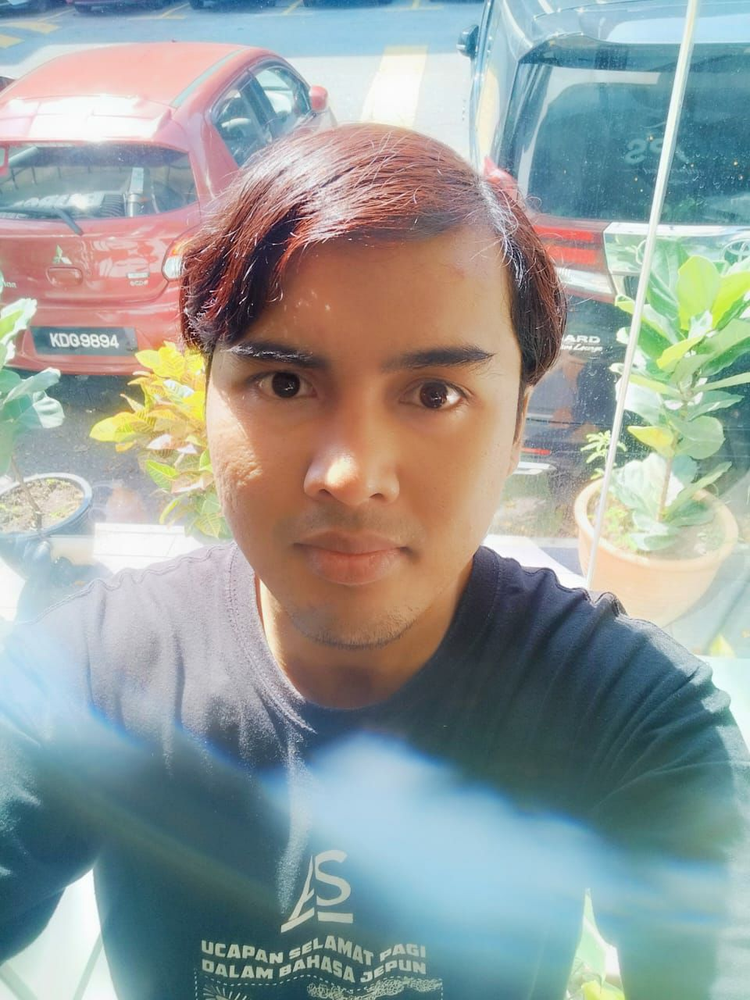
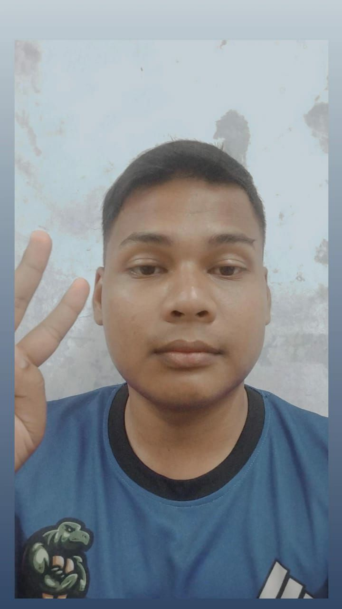
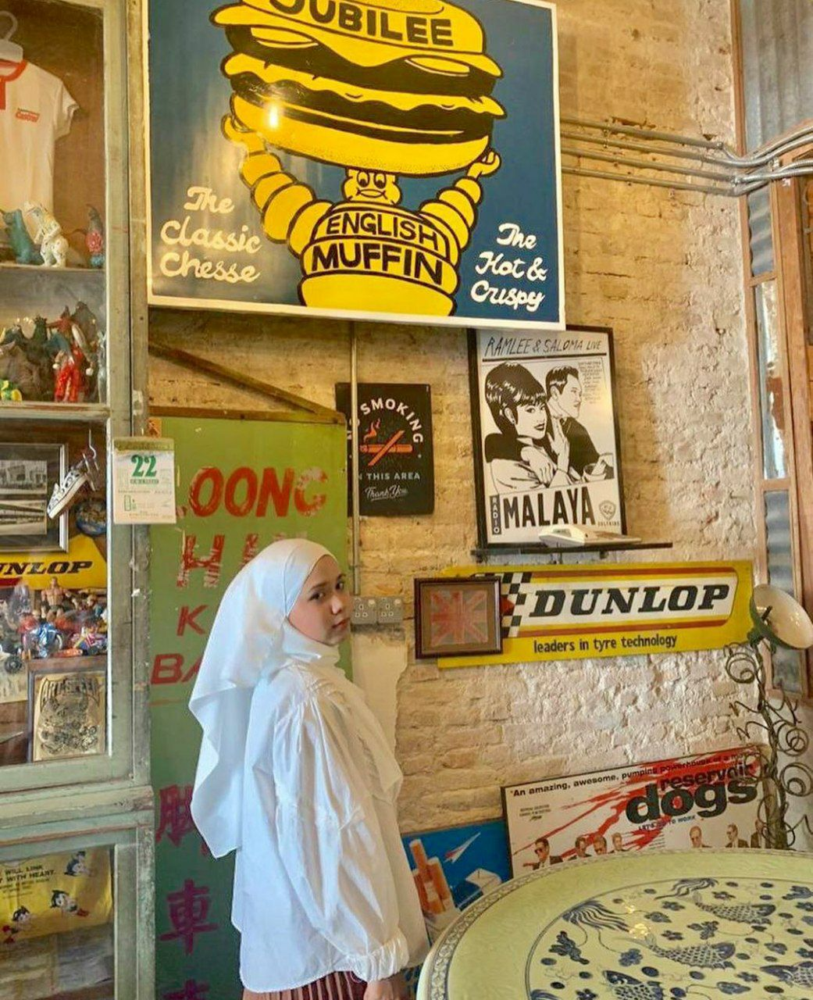

This is my dad, Ahmad Shakir Bin Ismail. He was born in To'Uban, Pasir Mas, Kelantan on November 11, 1964. He is a library staff at the UMEC Academic of Islamic Studies in Bachok. Before switching to this UM branch, he worked at Universiti Malaya Kuala Lumpuras as an office clerk.
My dad is a friendly person but at the same time very strict especially towards his children.Apart from that, he is one in million because he is a single father who raised my five siblings by himself. There is nothing like it when children are his priority. Even a million years of my life will not be able to repay the sweat of my beloved dad.
Eldest brother

This is my eldest brother. He was born on 23 January 1995 at Hospital Besar Tanah Merah, Kelantan. He attended SK Mulong 1 and went on to secondary school like same as me, SMK Mulong.
Second brother

This is my fourth brother, Muhammad Aiman or known as ime. He was born at Tanah Merah Hospital, Kelantan same as my eldest brother on 10 October 1997. He and my eldest brother were the only ones born in Kelantan. He managed to go to kindergarten in Cheras, KL because at that time my father moved back to KL after he was born in Kelantan. Ime went to school at SK Mulong 1 which is the first branch before SK Mulong 2. As far as I know, he went to school at SKM1 and transferred to SKM2. At the secondary school level as is known, from my brother to my younger sister and the twins used to attend the same school but there are some differences.
Third brother

Abecik or achik is the nickname for my third brother. He was born on 23 December 2000 at the Kuala Lumpur University Hospital. He went to the same primary school as me from SKM2 to SMKM high school
After finishing the 5th grade, father encouraged Achik to ask for military service for the first time but failed. Without giving up, when the opening for both of them unfortunately I don't even remember how much admission but he succeeded. Finally, he has succeeded in becoming a soldier and is now serving in Taiping, Perak.
Twins sister

The last one is my twin sister, Nur Sabrina. We are non-identical twins born on the same date, year and place but different times. Nana came out a few minutes before me. I know many people are confused because it should be the older sister who comes out first, but it's the other way around. But based on the conclusion, the one who came out first was the younger sister (doctor's study maybe haha I don't really know huhuhu).
We went to the same school from kindergarten to high school just in different classes. During elementary school, nana was in the front class and I was in the back class after her class. In middle school, we were in the same class but it wasn't long until the 3rd grade that we split up and I was in the class ahead of him. When moving to a new school, SMK Ketereh during form 4, we were in the same class at first but split again when he decided to enter the skills class which is cooking. Although it is a skill but academics is also included.